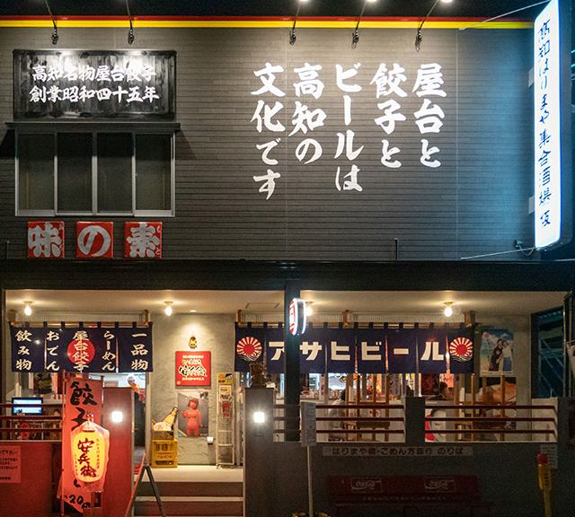

26いまどき安兵衛いまどきやすべえ
official
屋台安兵衛と同じ株式会社エムエフシー（高知市稲荷町）が営む店で、屋台ではなく店舗として16時から深夜0時まで開ける。屋台安兵衛が餃子・らーめん・おでんだけなのに対し、こちらは水餃子、じゃこ飯・かつを飯・チャーシュー飯のごはん物、すまき・ちくきゅう・酒盗などの一品、アイスクリンまで品書きが広い。飲み物は生ビール600円、やかんビール（生ビール4杯分）1,980円、土佐の地酒 各640円〜、レモン酎ハイ660円など。席の予約は受け付けていない（公式サイトに明記）。持ち帰り用の品書きが別にあり、電話で予約注文ができる。火曜定休。支払い方法は公式の記載がないため未確認。
一皿:屋台餃子（薄皮で小ぶり、高知県産のニラとショウガを使った野菜多めの餡。7ヶで一人前、にんにく有無を選べる）／水餃子（別添えのスープと一緒に、またはタレで食べる）／じゃこ飯（高知県産の釜揚げちりめんじゃこを飯にのせ、高菜とかつお節を添える）
| 営業時間 | 16:00〜24:00 |
|---|---|
| 定休日 | 火曜日 |
| 住所 | 高知県高知市はりまや町2-7-6 |
| 予約 | 席の予約は不可（公式サイトに「当店ではお席のご予約をお受けしておりません」）。持ち帰りは電話で予約注文できる。 — ☎ 088-885-7762 ／ 公式サイト |
選定理由:屋台安兵衛の屋台は19時からで雨の日は休むため、同じ屋台餃子を確実に食べられる受け皿としてこの章に要る。章の条件「屋台餃子を出す店を2店以上」の2店目。営業の根拠＝①店自身の2026年の情報: 公式サイトのお知らせ最新が 2026-11-06（サイト更新）、公式お品書きPDFのファイル名が imadoki_20260402（2026-04-02版）で、同PDFに電話番号 088-885-7762 と税込価格が印刷されている（2026-11-10 取得）。公式サイトの店舗情報にも「いまどき安兵衛／はりまや町2-7-6／16:00-24:00／火曜定休」が現行店として載っている。②閉店していないことの確認: 公式SNSのアカウント名は Instagram @yasube1970・Facebook「屋台餃子安兵衛」（旧店名・改称の表記なし）で、現行の投稿がある。**未確認**: 「いまどき安兵衛 閉店」「いまどき安兵衛閉店」「いまどき安兵衛 移転」「いまどき安兵衛 リニューアル」の検索は、この作業の環境のWeb検索回数の上限に達したため実施できていない（屋台安兵衛については実施済み）。
Googleマップで開く
写真: 公式サイト（mfc-group.jp）より引用 / 外観: 出典ページ / 参照元: 公式サイト 店舗情報（住所・電話・営業時間・定休日・予約不可）2026-11-10 取得 / 公式お品書きPDF（2026-04-02版・食事と飲み物の税込価格、持ち帰り品書き）2026-11-10 取得 / 公式サイト 人気メニュー（店舗ごとの取り扱い）2026-11-10 取得 / 公式サイト お知らせ（最新 2026-11-06 サイト更新）2026-11-10 取得